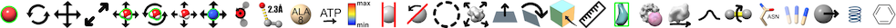

The ui command sets generic tool-interface preferences and adjusts mouse-button assignments for interactive manipulation.
• ui autostart true | false tool-name• ui dockable true | false tool-nameWhether the tool should start automatically upon subsequent ChimeraX startup; saved in preferences. Can also be adjusted through context menus.
• ui favorite true | false tool-nameWhether panels of the tool should be allowed to reinsert automatically when dragged over the main window, as opposed to remaining separate; initially true for all panels except the Help Viewer; saved in preferences. Can also be adjusted through context menus.
• mousemode [ control ] [ alt ] [ command ] [ shift ] [ leftMode function ] [ middleMode function ] [ rightMode function ] [ wheelMode function ] [ pauseMode function ]Whether the tool should be listed in the Favorites menu; saved in preferences. Can also be adjusted through context menus.
The mousemode command (same as ui mousemode) assigns ChimeraX functions to the left, middle, and right mouse buttons, alone and in combination with the modifier keys control, alt, command, and shift. In addition, wheelMode refers to scrolling and pauseMode refers to pausing the cursor over something in the graphics window without clicking any buttons. Multiple modifier keys and multiple “buttons” can be given in a single command, but all specified modifiers apply to all specified buttons. For example, two commands rather than one would be needed to assign functions to control right and alt wheel:
mousemode control right 'rotate selected models'
mousemode alt wheel contourGiven without arguments, the mousemode command reports the current assignments in the Log. See also: cofr, device, ChimeraX window
A trackpad or single-button mouse can also be used. Summary of mouse and trackpad defaults:
rotate left mouse button trackpad click-drag
Mac: also trackpad 2-finger rotation if multitouch gestures enabledtranslate middle mouse button Mac: trackpad + Alt, 3-finger drag if multitouch gestures enabled
Windows: trackpad + Ctrl-Altzoom mouse scroll wheel Mac: trackpad pinch or 4-finger drag if multitouch gestures enabled, otherwise 2-finger drag
Windows: trackpad 2-finger dragselect left mouse button + Ctrl, + Shift to toggle trackpad + Ctrl, + Shift to toggle The right mouse button (= trackpad + Alt on Windows, trackpad +
on Mac) is also assigned to translate by default, but can be reassigned by clicking an icon in the Right Mouse or Markers tab of the Toolbar: 
The function can be truncated to a unique string. If the string contains spaces, it should be enclosed in quotation marks. Not all functions make sense for a given input mode; for example, only identify object and none are reasonable functions for pauseMode.
function
(default, if any)description Right Mouse icon select
(control left)select items for subsequent operations, +Shift to toggle; see also select rotate
(left)XY-rotate (screen coordinates) with cursor in central part of window, Z-rotate with cursor in periphery, except if wheel, Y-rotate only; see also turn, roll translate
(middle, right)XY-translate (screen coordinates), except if wheel, Z-translate; see also move zoom
(wheel)zoom the view (slightly different in VR); see also zoom identify object
(pause)show identifying information in balloon, atomic-model chain description (if available) in status line none no assignment translate selected models translate models with any part selected rotate selected models rotate models with any part selected pivot set center of rotation to atom; see also cofr distance add distance monitor pseudobond between two successively clicked atoms or remove existing distance monitor; see also distance and label label label/unlabel clicked atom or ribbon segment with residue name and number (slightly different in VR),
unlabel all residues when background is clicked; see also labelmove label move 2D label; see also 2dlabels clip click without dragging to activate/deactivate clipping, click-drag to activate (if clipping is not yet active) and translate front or near plane, +Alt back or far plane, +Shift slab (translate paired planes in same direction), +Alt-Shift slab thickness (translate paired planes in opposite directions); whether activation applies to front/back planes that rotate with the scene or near/far planes that remain parallel to the screen is set in the Clipping preferences; see also clip clip rotate click without dragging to activate/deactivate clipping, click-drag to activate (if not already active) and rotate front/back clipping planes; see also clip zone limit atomic and volume data display to a zone around the clicked residue (details...) contour level adjust volume data threshold level; see also volume move planes show single plane of clicked volume data if full region shown initially, move plane or slab along its axis to show a different section; see also volume crop volume show volume data outline box and adjust region size by dragging any face; see also volume pick blobs pick surface blob to measure area, volume, size; see also measure blob map eraser move map eraser sphere; see also volume erase play map series play volume series; see also vseries windowing adjust volume data solid display thresholds collectively: vertical motion adjusts window level (moves all thresholds in parallel to higher or lower values), horizontal motion adjusts window width (moves thresholds symmetrically farther apart or closer together); the dominant type of motion wins out, i.e., a diagonal motion will not change both level and width bond rotation adjust torsion angle (original position not retained); see also torsion swapaa “mutate” and label the amino acid residue under the mouseclick, with vertical drag cycling through the 20 standard types in arbitrary conformations; original sidechain not retained tug drag atoms and apply OpenMM dynamics while button is held down (details...); original coordinates not retained minimize jiggle residue and its neighbors with OpenMM dynamics while button is held down (details...); original coordinates not retained select add add to selection; see also select (do not toggle to deselected if already selected) select subtract subtract from selection; see also select (do not toggle to selected if already deselected) select toggle toggle selection status (select if not already selected, deselect if selected) rotate and select click to select, drag to rotate The following mouse modes pertain to markers and links. See also: Marker Placement
function description Markers icon mark maximum add marker at the nearest local maximum in volume data above the threshold along the line of sight mark plane add marker in single-plane volume display mark surface add marker at the nearest surface point along the line of sight mark center add marker at the geometric center of the clicked surface blob, ignoring other blobs mark point Place marker at the tip of the hand-controller cone in virtual reality link markers select and link successively clicked markers move markers drag marker to reposition resize markers drag to adjust marker/link radii delete markers delete markers and links
A click with a trackpad (touchpad) or single-button mouse is generally interpreted as left click, but can be combined with modifier keys to emulate middle and right:
With Trackpad gestures enabled in the Trackpad preferences, multitouch gestures can also be used on Mac trackpads: two-finger rotation, three-finger translation, pinch-zoom, and four-finger scrolling; with the setting turned off, a two-finger drag is interpreted as scrolling. Either way, if “secondary click” is enabled in the Trackpad system preferences, a two-finger click-and-drag performs the right-button action. Magic Mouse scrolling will not work after a trackpad has been used unless the Trackpad gestures option has been turned off.